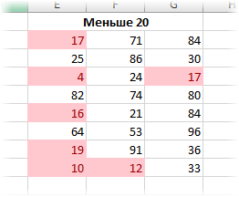

Условное форматирование
Условное форматирование в MS Excel с примерами
Условное форматирование в Эксель – этот тот инструмент, который делит работу на до и после его изучения. Суть в том, что при наступлении некоторого условия ячейки форматируются автоматически. Например, если число превышает значение 100, шрифт становится красным полужирным курсивом; когда до наступления платежа остается 2 дня, ячейка с датой подсвечивается желтым цветом; перевыполнение плана продаж на 5% и более окрашивается в зеленый цвет и т.д. и т.п.
Вот упрощенный, но реальный пример. Есть отчет о товарных запасах.
Менеджер по закупкам отслеживает те позиции, которые требуют пополнения. Для этого он смотрит в последнюю колонку, где рассчитывается товарный запас (ТЗ) в неделях. Если ТЗ меньше, скажем, 3-х, то нужно готовить заказ. Если меньше 2-х, то возникает риск дефицита и заказ нужно размещать срочно. Если в таблице десятки позиций, то просмотр каждой строки займет довольно много времени. А теперь та же таблица, где после применения условного форматирования значения ниже пороговых подсвечиваются некоторым цветом.
Согласитесь, так гораздо нагляднее. В реальности условия сложнее, а данные постоянно меняются. Поэтому эффект от применения условного форматирования – это многочасовая экономия времени ежедневно! Теперь для оценки запасов достаточно взглянуть на таблицу, а не анализировать каждую ячейку. Много желтого – пора действовать, много красного – ситуация критическая!
Для настройки условного формата следует воспользоваться соответствующей командой на вкладке Главная .
При ее нажатии открывается меню.
Верхние 5 команд – это готовые сценарии для быстрого условного форматирования. Чтобы ими воспользоваться достаточно выбрать нужный вариант и сделать минимальные настройки. Эти сценарии мы рассмотрим ниже.
В нижней части еще три команды, с помощью которых происходит ручное создание, удаление и управление правилами условного форматирования. О них также поговорим.
Все сценарии разбиты на категории:
- Правила выделения ячеек
- Правила отбора первых и последних значений
- Гистограммы
- Цветовые шкалы
- Наборы значков
Правила выделения ячеек применяют для ячеек, которые сравниваются с определенным значением. Возможны различные варианты, которые показаны на рисунке ниже.

Больше… Если значение ячейки, к которой применяется правило выделения, больше указанного значения, то в силу вступает заданный формат.
Пороговое значение указывается в левой части окна (сейчас там 80), готовый формат выбирается из выпадающего списка справа. Можно, конечно, и самому задать. Диалоговые окна для других условий похожи, поэтому ниже приводятся только те, которые могут вызвать затруднения.
Меньше… Форматируются ячейки, у которых значение меньше заданного порога.
Между… Форматирование наступает, если содержимое ячейки находится внутри заданных границ.
Равно… если значение или текст в ячейке совпадает с условием.
Текст содержит… Если совпадает только часть текста (слово, код, комбинация символов и т.д).
Дата… Возможность форматировать периоды отстоящие от текущей даты, например, сегодня, вчера, последние 7 дней, следующий месяц и др. Условное форматирование даты полезно при контроле платежей, отгрузок и т.п.
Повторяющиеся значения… выделяются ячейки с одинаковым содержимым. Отличный способ найти дубликаты (повторы). В настройках можно выбрать и обратный вариант – выделить только уникальные значения.
Правила отбора первых и последних значений выделяют наибольшие или наименьшие значения. Помогают анализировать данные, показывая приоритеты и «слабые места».
Первые 10 элементов… Выделяются первые топ–10 ячеек. Количество регулируется в диалоговом окне (можно сделать топ-5, топ-20 и др.).
Первые 10%… Выделяются 10% наибольших значений. Долю можно изменить.

Последние 10 элементов… Аналогично с первым пунктом, только форматируются наименьшие значения.
Последние 10%… Наименьшие 10% или другая доля от всех элементов.
Выше среднего… Форматируются все значения, которые больше средней арифметической.
Ниже среднего… Ниже средней арифметической.
Гистограммы позволяют в каждую ячейку с числом добавить столбец линейной гистограммы, размер которой определяется относительно максимального значения в выделенном диапазоне.
Помогает визуализировать небольшой набор данных без использования отдельных диаграмм. После применения выглядит примерно так.
Цветные шкалы также автоматически определяют максимальное и минимальное значение в диапазоне и форматирует каждую ячейку по цвету, который соответствует значению, изображая что-то вроде тепловой карты.
Например, наибольшее значения – это красное, наименьшее – зеленое, а остальные ячейки – это плавный переход от одного цвета к другому через промежуточный белый.
Набор значков – эффектный, но не очень гибкий способ визуализации. Каждой ячейке присваивается свой значок в соответствии с выбранным стилем.
В ячейках Excel выглядит так:
Все картинки выше были сделаны с помощью стилей по умолчанию. Чтобы внести изменения, нужно выделить диапазон и перейти в управление правилами.
Откроется диалоговое окно, где можно создать новое, изменить или удалить правило. Часто используют сразу несколько правил.
После нажатия кнопки «Изменить правило…» откроется окно, вид которого зависит от редактируемого правила.
Здесь также есть куча настроек, но мы их пока опустим. В целом там все интуитивно понятно. Нужно только поэкспериментировать. Практика – лучший учитель.
Если какое-то правило условного форматирования нужно удалить, то после выделения диапазона следует выбрать команду удаления.
Условное форматирование – это три шага вперед на пути к профессиональному использованию Excel. Поэтому рекомендую незамедлительно внедрить в практику.
Хочется только напомнить, что при использовании любого форматирования очень важно не переусердствовать. Всегда нужно помнить о главной цели: облегчение восприятия информации и привлечение внимания к наиболее важным местам. Например, формат ниже – это неправильно.
Старайтесь также, чтобы количество используемых цветов было не больше трех. Иначе внимание рассеивается и может стать еще хуже.